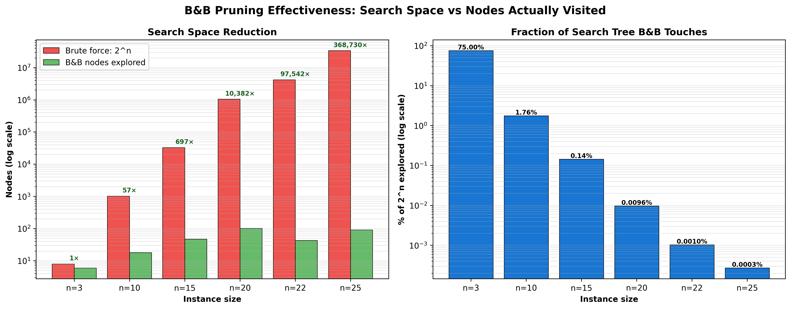
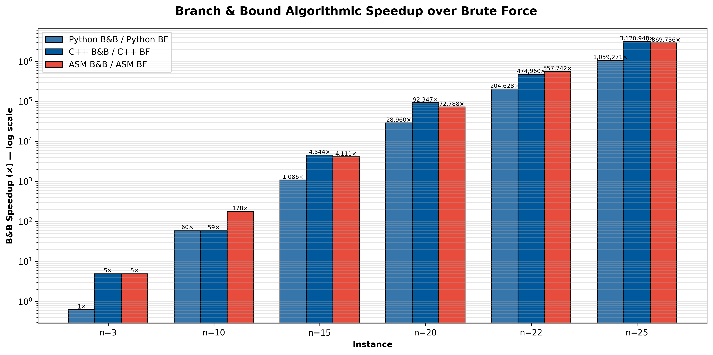
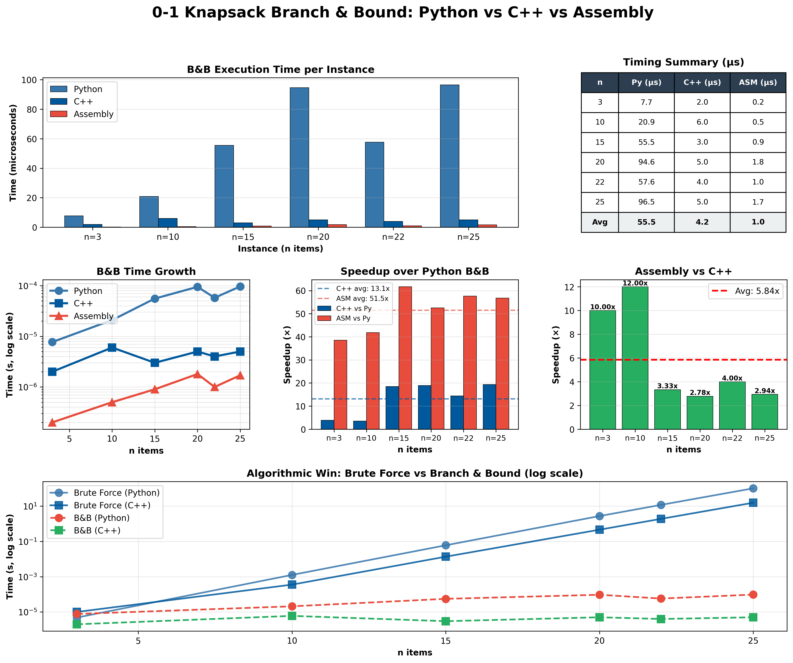
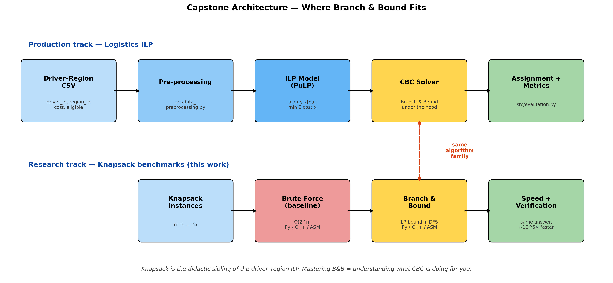

Sorted by value/weight ratio. 16 subsets total at n=4.
Manageable by hand — but at n=25, that's 33 million subsets.
Hold this in your head — we'll trace the B&B tree on this exact instance in a moment.
Baseline: Brute Force
Enumerate every subset — 2n of them.
for mask in range(1 << n): # 2^n iterations
w, v = 0, 0
for i in range(n):
if mask & (1 << i):
w += weights[i]
v += values[i]
if w <= capacity and v > best:
best = v
n
2n
Python
C++
20
~1M
2.7 s
0.46 s
22
~4M
11.8 s
1.9 s
25
~33M
102 s
15.6 s
Branch & Bound — The Idea
Branch. At each item, recurse on include vs exclude.
Bound. Compute an upper bound on the best the subtree could produce.
Prune. If bound ≤ current best, skip the whole subtree.
Items are pre-sorted by value / weight descending,
so the include branch is always the greedy guess —
it finds a strong incumbent fast, which makes the bound tighter and prunes harder.
B&B Decision Tree — On Our Tiny Instance
Out of 16 possible subsets, B&B visits
9 nodes — 3 pruned by bound, 2 by infeasibility.
The best feasible solution B+C = 22 is found early
and powers the rest of the pruning.
The Bound: LP Relaxation
Relax xi ∈ {0,1} → xi ∈ [0,1]. The fractional knapsack has a closed-form greedy answer.
def upper_bound(level, cur_weight, cur_value):
bound = cur_value
rem = capacity - cur_weight
for i in range(level, n):
if w[i] <= rem: # take the whole item
bound += v[i]
rem -= w[i]
else: # take a fraction of the next item
bound += v[i] * rem / w[i]
break
return bound
Items already sorted by value/weight, so this greedy fill is the LP optimum.
Floor of the bound is still valid for integers — that's why ASM can do this in pure integer math, no FPU.
How Much Does Pruning Actually Save?

At n=25, the brute force search has 33 million subsets;
B&B visits only a few dozen.
That's less than 0.0001% of the tree.
Same Algorithm, Three Languages
void branch(int level, int cw, int cv) {
if (cv > best) { best = cv; ... }
if (level == N) return;
if (upper_bound(level, cw, cv) <= best) return; // PRUNE
if (cw + W[level] <= CAP) // INCLUDE
branch(level+1, cw + W[level], cv + V[level]);
branch(level+1, cw, cv); // EXCLUDE
}
Python and C++ are line-for-line equivalent.
The x86-64 ASM uses the Win64 ABI and recurses via call/ret — r12/r13 hold the sorted arrays,
ebx holds the running incumbent, the bound is computed inline in pure integer math.
Algorithmic Win: B&B vs Brute Force

Python at n=25: 102 s → 96 μs —
over 1,000,000× faster.
Same answer (1153). Same machine. Just a better algorithm.
3-Way B&B: Python vs C++ vs ASM

Across n = 3 … 25, C++ averages ~13× faster than Python; hand-tuned x86-64 ASM averages ~52× over Python and ~3× over C++.
Connection to My Capstone
Logistics ILP
Driver-to-region binary ILP
Modeled in PuLP, solved with CBC
CBC is a Branch & Bound solver
Knapsack is its didactic sibling
LLM Track
Hand-built solvers (this work) vs LLM-generated code
Knapsack is the right testbed: small, well-defined, has ground truth
Brute-force ↔ B&B comparison shows the algorithmic gap an LLM must learn to close
The lesson: algorithmic choice dominates language choice.
A million× win from B&B; a 50× win from ASM. Both matter — but you can't out-engineer an exponential.
Where B&B Fits in the Capstone

Production track and research track both pass through the same algorithm family.
Takeaways
Brute force is a useful baseline — and a clear demonstration of why we need smarter algorithms.
B&B uses an LP-relaxation bound to prune the search tree: correct, optimal, dramatically faster.
Same algorithm in 3 languages isolates language overhead from algorithm overhead — the speedups multiply independently.
Connection: the ILP solvers I use for logistics assignment are B&B under the hood. Understanding B&B = understanding the tools.